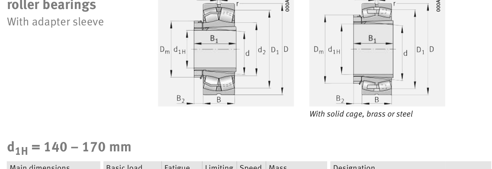

Original catalogue drawing - FAG Schaeffler HR 1, page 762

Scanned from the manufacturer catalogue page listing this part number. All part numbers printed on that table share the same drawing.
Scale cross-section
Blue = inner / outer ring, yellow = rolling element. Drawn to scale from this part's own
dimensions for selection reference only - not a manufacturing or assembly drawing.
Dimension table (mm / inch)
Symbol
Dimension
mm
inch
d
Bore diameter
170
6.6929
D
Outside diameter
360
14.1732
B
Inner-ring / bearing width
120
4.7244
r
Chamfer (min)
4
0.1575
Notes
Weights are given in kg. Load ratings are shown in both the original catalogue units and the converted value (1 N = 0.2248 lbf). Data is provided for selection reference only - confirm against the latest official catalogue before ordering.
Main dimensions
Bore d (mm)
170
Outside dia. D (mm)
360
Width B (mm)
120
Inner-ring shoulder dia. D1 (mm)
303.9
Load ratings & speeds
Basic dynamic load rating Cr (lbs)
420393
Basic static load rating Cor (lbs)
499076
Basic dynamic load rating Cr (N)
1.87e+06
Basic static load rating C0r (N)
2.22e+06
Fatigue limit load Cur (N)
173000
Factor e
0.35
Factor Y0
1.91
Limiting speed nG (rpm)
2,130
Reference speed nB (rpm)
1,320
Weight
Weight (kg)
56.9
Mounting dimensions (fillets / shoulders)
Housing fillet r max (mm)
4
Shaft shoulder da (mm)
187
Shaft shoulder db (mm)
185
Housing shoulder Da (mm)
343
Housing fillet ra max (mm)
3
Bearing life (ISO 281 basic rating life)
C / P
Equivalent load P (N)
L10 (106 rev)
L10h at 700 rpm
4
467,500
102
2,419
6
311,667
392
9,345
8
233,750
1,024
24,381
10
187,000
2,154
51,296
15
124,667
8,323
198,178
Basic rating life per ISO 281: L10 = (C/P)10/3 with C = 1,870,000 N. Hours = L10 x 106 / (60n). Life-modification factors for lubrication, contamination and temperature (aISO) are not included.
Source & traceability
Brand
FAG
Source catalogue
FAG / Schaeffler Rolling Bearings HR 1
Catalogue page
p.762 (dimensions)
Load ratings in newtons, fatigue limit load Cur, limiting speed nG and reference speed nB.
Send us the quantity you need and we will come back with price and
lead time, normally within 24 hours. Equivalent parts from other brands can be quoted at the same time.